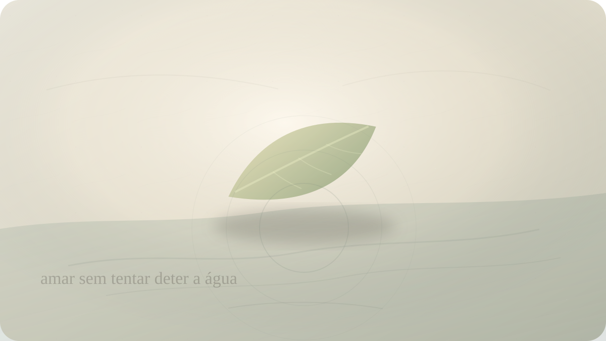

Apego e saudade
Por que queremos tornar permanente aquilo que amamos?
Buda, impermanência e a difícil diferença entre amar e agarrar.

Há uma dor discreta em amar algo que muda. Você sabe, em algum nível, que nada permanece exatamente como está. Pessoas envelhecem, relações mudam de forma, filhos crescem, corpos adoecem, casas deixam de ser casa, conversas se tornam lembrança, presenças viram fotografia, e até os momentos felizes começam a passar no instante em que acontecem. Ainda assim, uma parte de nós quer deter o fluxo.
Queremos que o abraço dure mais do que o corpo permite. Que o amor continue com a mesma temperatura. Que a pessoa amada não mude demais. Que a fase boa não termine. Que a juventude fique. Que o passado possa ser visitado sem o peso de saber que ele não volta. Queremos tornar permanente aquilo que amamos porque a impermanência parece uma ameaça direta ao coração.
O ensinamento budista sobre impermanência, anicca, entra justamente nesse ponto, mas quase sempre é mal compreendido. Muitos o escutam como uma ordem de frieza: não se apegue, não ame, não sofra, não dependa de ninguém. Essa leitura transforma uma investigação profunda sobre sofrimento em uma espécie de anestesia moral.
Mas o Buda não parece interessado em produzir pessoas incapazes de amar. Ele investiga por que o amor, quando misturado à exigência de posse e permanência, se transforma em sofrimento. A pergunta não é se devemos amar menos. Talvez seja se conseguimos amar sem exigir que o amado obedeça ao nosso medo da perda.
A impermanência não é uma opinião pessimista. É a condição de tudo que nasce de causas e condições. O corpo existe porque há alimento, respiração, tempo, tecido, sangue, calor. Uma relação existe porque há encontro, cuidado, linguagem, desejo, circunstância, memória, escolha. Um momento feliz existe porque inúmeras condições se alinham. Quando as condições mudam, a forma muda.
Nós sabemos disso intelectualmente. O problema é que o coração costuma saber mais devagar.
No Piyajātika Sutta, preservado no Majjhima Nikāya, aparece uma formulação difícil: dor, lamentação e desespero nascem daquilo que é querido. A frase pode parecer brutal. Uma pessoa em luto poderia ouvi-la como acusação: você sofre porque amou. Mas a delicadeza está em perceber que o ensinamento não condena o afeto; ele revela sua vulnerabilidade estrutural. Tudo que é querido pode mudar, e por isso tudo que é querido pode ferir.
Quem ama entrega parte de si ao que não controla. Essa é a grandeza e o risco do amor. Se amo alguém, a vida dessa pessoa passa a importar para mim. Sua presença me alegra, sua dor me toca, sua ausência me altera. Não há amor humano totalmente imune à perda. Fingir o contrário seria mentira.
O apego nasce quando essa vulnerabilidade se torna intolerável. Em vez de reconhecer que amo algo vivo e, portanto, mutável, tento transformá-lo em garantia. Quero que a pessoa continue sendo quem foi para mim. Quero que o vínculo me assegure contra abandono. Quero que o prazer se repita. Quero que o passado permaneça disponível. Quero amar sem ser exposto ao tempo.
Esse desejo é profundamente humano. Também é impossível.
A saudade frequentemente nasce dessa impossibilidade. Ela não é apenas falta do outro; é também atrito entre memória e impermanência. A memória preserva uma forma. A vida continua alterando tudo. Então sofremos não só porque algo acabou, mas porque uma parte de nós tenta negociar com o tempo: volte, fique, seja como antes, não envelheça, não morra, não mude de voz, não me deixe mudar também.
A prática budista não pede que a memória seja apagada. Ela pede que vejamos o movimento. Quando a mente segura uma imagem do que foi e exige que a realidade atual corresponda a ela, nasce uma segunda dor. A primeira dor é a perda. A segunda é a resistência à natureza da perda.
Essa diferença importa. Há dores inevitáveis. O envelhecimento de quem amamos dói. A morte dói. O fim de uma relação dói. A distância dói. O que o Buda investiga não é como abolir toda sensibilidade, mas como não acrescentar à dor inevitável a violência de exigir que o mundo deixe de ser mundo.
Apego, nesse sentido, não é carinho. Não é cuidado. Não é compromisso. Apego é a contração que diz: isto precisa permanecer como eu quero para que eu esteja bem. O amor se interessa pelo ser amado. O apego se interessa pela segurança que o ser amado me dá. O amor vê o outro como vivo. O apego tenta congelar o outro como função.
Isso aparece em relações comuns. Uma pessoa diz que ama, mas odeia quando o outro muda. Diz que cuida, mas controla. Diz que sente saudade, mas quer punir a vida por ter seguido. Diz que não consegue viver sem alguém, quando talvez queira dizer: não sei quem sou se essa forma desaparecer.
O ensinamento de anicca corta essa ilusão com uma delicadeza severa. Tudo que você toca está passando. Tudo que você ama está passando. Você também está passando. A questão não é como impedir isso. A questão é como viver de modo que a consciência da passagem torne o amor mais presente, e não mais possessivo.
Há uma ternura nessa possibilidade. Se sei que algo é impermanente, talvez eu pare de tratar sua presença como garantida. Talvez eu escute melhor. Talvez eu agradeça sem transformar gratidão em medo. Talvez eu cuide sem sufocar. Talvez eu permita que uma pessoa seja processo, não propriedade. Talvez eu pare de pedir ao instante que se torne monumento.
Impermanência, quando vista com maturidade, não diminui o valor das coisas. Ao contrário: revela que o valor delas não depende de durarem para sempre. Uma flor não precisa ser eterna para ser real. Uma conversa não precisa ser repetível para ter sido verdadeira. Um amor não precisa conservar a mesma forma para ter atravessado a vida com sentido.
O sofrimento aumenta quando confundimos duração com verdade. Achamos que, se terminou, foi falso. Se mudou, perdeu valor. Se alguém partiu, o que houve foi anulado. Mas a vida não funciona como contrato de permanência. Algo pode ter sido verdadeiro e ainda assim mudar. Pode ter sido amor e ainda assim terminar. Pode ter sido presença e ainda assim virar saudade.
Essa percepção é especialmente difícil no luto. Quando alguém morre, a impermanência deixa de ser conceito e se torna parede. A pessoa não volta. O corpo não aparece. A voz não responde. Nesse ponto, qualquer filosofia mal colocada pode ferir. Dizer “tudo é impermanente” a alguém devastado pode soar como pedra jogada sobre uma ferida aberta.
Mas, quando a dor encontra tempo e cuidado, talvez a impermanência possa deixar de ser insulto e tornar-se uma forma de verdade habitável. Não porque a perda passe a fazer sentido. Nem toda perda faz. Mas porque lutar contra a estrutura da realidade consome a pouca força que ainda resta para amar o que foi, cuidar do que ficou e respirar o dia presente.
A história de Kisa Gotami, conhecida na tradição budista, fala justamente dessa travessia. Uma mãe perde o filho e procura remédio para trazê-lo de volta. O Buda a orienta a buscar sementes de mostarda em uma casa onde ninguém tenha morrido. Ao percorrer as casas, ela descobre que nenhuma família está livre da morte. A dor singular dela não desaparece, mas encontra a universalidade da condição humana.
Essa história não diz que a perda é pequena. Diz que a perda não é uma falha pessoal do universo contra nós. Todos vivem sob a mesma lei de mudança. A compaixão nasce quando a pessoa percebe que sua dor não a separa inteiramente dos outros; ela a coloca dentro da fragilidade comum.
Amar sob a luz da impermanência talvez seja amar com as mãos menos fechadas. Não mãos vazias de cuidado, mas mãos que sabem não possuir o que acolhem. Segurar sem esmagar. Acompanhar sem aprisionar. Desejar permanência sem transformar esse desejo em tirania contra o real.
Isso também vale para a própria identidade. Queremos tornar permanentes não apenas as pessoas amadas, mas versões de nós mesmos. A juventude, a beleza, a força, a imagem de competência, a fase em que alguém precisava de nós, o papel que nos dava lugar. Sofremos quando a vida nos pede uma forma nova e continuamos defendendo a antiga como se ela fosse nossa essência.
O Buda nos convida a observar o surgir e desaparecer das coisas sem transformar cada mudança em ameaça ao eu. Sensações surgem e passam. Emoções surgem e passam. Relações surgem, mudam e passam. A consciência desse movimento pode ser dolorosa, mas também liberta do delírio de controle absoluto.
Na prática, talvez a pergunta mais honesta não seja como não se apegar a nada. Essa pergunta pode virar ideal impossível e desumano. Talvez seja: onde estou confundindo amor com exigência de permanência? Onde meu cuidado virou controle? Onde minha saudade virou recusa da vida? Onde meu medo de perder está impedindo que eu esteja realmente presente enquanto ainda há presença?
Porque o paradoxo é este: ao tentar tornar permanente aquilo que amamos, muitas vezes deixamos de encontrá-lo no único lugar em que ele existe — agora. A mente segura o futuro, negocia com a perda, revisita o passado, teme a mudança. Enquanto isso, o rosto diante de nós muda sob a luz do dia.
A impermanência não é uma desculpa para amar menos. É um chamado a amar com menos sono. A presença é preciosa justamente porque não pode ser garantida indefinidamente. O que passa não é menos digno de amor. Talvez seja digno de um amor mais atento.
Então a pergunta permanece, mansa e difícil: se você não pudesse transformar em permanente aquilo que ama, conseguiria ainda assim amá-lo plenamente enquanto ele está aqui?
Pergunta final
Se você não pudesse transformar em permanente aquilo que ama, conseguiria ainda assim amá-lo plenamente enquanto ele está aqui?
Fontes e leituras
- Majjhima Nikāya 87. Piyajātika Sutta: From One Who Is Dear.
- Dhammapada, verso 277: ensinamento sobre a impermanência dos fenômenos condicionados.
- Dīgha Nikāya 16. Mahāparinibbāna Sutta: instrução final sobre a decadência das coisas condicionadas.
- Access to Insight. Piyajatika Sutta: From One Who Is Dear, tradução de Thanissaro Bhikkhu.
- Access to Insight. The Three Basic Facts of Existence: Impermanence.
- Buddha Meditation Center of Greater Washington. Grief, Attachment, and the End of Suffering.
Leituras relacionadas
E você, o que está sentindo agora?
Escolha seu momento e encontre uma reflexão filosófica para atravessá-lo com mais clareza.
Encontrar uma reflexão